<!DOCTYPE lake>
<h2 data-lake-id="SCjrI" id="SCjrI"><span data-lake-id="u8164bce1" id="u8164bce1">学习目标</span></h2><ol list="u4ffd95a8"><li data-lake-id="ua55135d5" fid="uef934433" id="ua55135d5"><span data-lake-id="u484d4fb1" id="u484d4fb1">掌握驱动屏幕的方式</span></li><li data-lake-id="u332fc3cc" fid="uef934433" id="u332fc3cc"><span data-lake-id="u0f9c1bda" id="u0f9c1bda">掌握调用Api</span></li><li data-lake-id="uf7d5a7c3" fid="uef934433" id="uf7d5a7c3"><span data-lake-id="u0e4d9bcf" id="u0e4d9bcf">掌握软驱动改为硬驱动实现</span></li><li data-lake-id="u313b7a65" fid="uef934433" id="u313b7a65"><span data-lake-id="u9447face" id="u9447face">屏幕中显示时间</span></li></ol><h2 data-lake-id="SaAWe" id="SaAWe"><span data-lake-id="u65fd1243" id="u65fd1243">学习内容</span></h2><h3 data-lake-id="CYTFj" id="CYTFj"><span data-lake-id="u0f4a7235" id="u0f4a7235">SSD1306</span></h3><p data-lake-id="u5b321f6b" id="u5b321f6b"><span data-lake-id="u9b1f7b1e" id="u9b1f7b1e">SSD1306是一款OLED显示驱动芯片，由Solomon Systech Limited公司制造。它支持基于SPI和I2C两种通信协议，具有低功耗、高对比度和快速响应等优点，通常用于各种小型嵌入式系统和DIY电子项目中。</span></p><p data-lake-id="u4ea90db7" id="u4ea90db7"><span data-lake-id="uad201241" id="uad201241">SSD1306芯片可以控制OLED显示屏上的像素，支持的分辨率为128x32、128x64、96x16和64x48等不同规格。其中，128x64是最常见的规格，它由128列和64行像素组成，总共有8192个像素点。SSD1306芯片还支持多种字体和字符集，可显示各种文字、图标、图形等内容。</span></p><p data-lake-id="u107d1cf5" id="u107d1cf5"><span data-lake-id="u11ca7a2c" id="u11ca7a2c">SSD1306芯片还具有内置的RAM缓冲区，可以通过SPI或I2C接口向缓冲区写入数据，然后再通过命令将缓冲区中的数据刷新到OLED显示屏上。这种方式可以大大减少SPI或I2C通信的次数，提高数据传输效率，从而达到更好的显示效果。</span></p><p data-lake-id="u926e51a4" id="u926e51a4"><span data-lake-id="u00967ebe" id="u00967ebe">总之，SSD1306是一款高性能、低功耗、易于控制的OLED显示驱动芯片，广泛应用于各种嵌入式系统和电子产品中，是一种理想的显示解决方案。</span></p><p data-lake-id="u4a739e0b" id="u4a739e0b"><span data-lake-id="ufb3c6d95" id="ufb3c6d95">以下是对ssd1306的特点总结:</span></p><ol list="u33690ac0"><li data-lake-id="u7d21dee3" fid="u3470206e" id="u7d21dee3"><span data-lake-id="u24f16dbb" id="u24f16dbb">支持I2C、SPI等多种通信接口；</span></li><li data-lake-id="u1536a6e8" fid="u3470206e" id="u1536a6e8"><span data-lake-id="ub696ab05" id="ub696ab05">驱动方式简单，可快速上手；</span></li><li data-lake-id="ue439bd46" fid="u3470206e" id="ue439bd46"><span data-lake-id="u00c3b19f" id="u00c3b19f">低功耗，显示效果好，适合各种嵌入式系统；</span></li><li data-lake-id="u59ee020e" fid="u3470206e" id="u59ee020e"><span data-lake-id="u8ad2be9f" id="u8ad2be9f">内部集成RAM，能够缓存多页的图像；</span></li><li data-lake-id="u7aa0ec01" fid="u3470206e" id="u7aa0ec01"><span data-lake-id="u8f117fcd" id="u8f117fcd">提供多种字体和图形，支持自定义字体和图形；</span></li><li data-lake-id="u2b84881e" fid="u3470206e" id="u2b84881e"><span data-lake-id="u78debd81" id="u78debd81">支持对图像进行旋转、反转等操作；</span></li><li data-lake-id="u0d5fd76f" fid="u3470206e" id="u0d5fd76f"><span data-lake-id="u02a4e7fb" id="u02a4e7fb">支持多种显示模式和亮度控制。</span></li></ol><p data-lake-id="u5350a7ef" id="u5350a7ef"><span data-lake-id="ua4ed9a9a" id="ua4ed9a9a">应用场景:</span></p><ol list="ucae4f86e"><li data-lake-id="u241a25bc" fid="uaa82ae38" id="u241a25bc"><span data-lake-id="u0e4bd439" id="u0e4bd439">数码管；</span></li><li data-lake-id="u14bc6427" fid="uaa82ae38" id="u14bc6427"><span data-lake-id="u3fce12e5" id="u3fce12e5">智能手表、手环等可穿戴设备；</span></li><li data-lake-id="ue3a2b49f" fid="uaa82ae38" id="ue3a2b49f"><span data-lake-id="u392e66a0" id="u392e66a0">智能家居控制面板；</span></li><li data-lake-id="ub07952fd" fid="uaa82ae38" id="ub07952fd"><span data-lake-id="uce218a50" id="uce218a50">可移动终端设备的显示部分；</span></li><li data-lake-id="uc1f9678e" fid="uaa82ae38" id="uc1f9678e"><span data-lake-id="u1518e26a" id="u1518e26a">电子秤、体脂称等健康设备的显示部分。</span></li></ol><h3 data-lake-id="oTxEy" id="oTxEy"><span data-lake-id="u11885468" id="u11885468">I2C版的SSD1306</span></h3><p data-lake-id="u839d9a52" id="u839d9a52">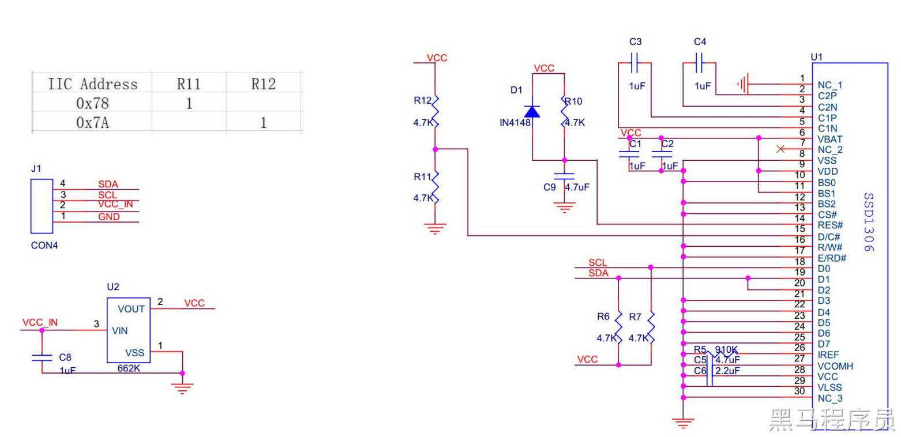</p><p data-lake-id="u745d4d4a" id="u745d4d4a"><span data-lake-id="uad7b80dc" id="uad7b80dc">I2C版本就是在原来模组上做了外围电路，外围电路的作用是将ssd1306的模式配置为I2C模式，这样就可以采用I2C方式进行通讯</span></p><h3 data-lake-id="prRZj" id="prRZj"><span data-lake-id="ucf5ed60a" id="ucf5ed60a">原理图</span></h3><p data-lake-id="uc1d8754f" id="uc1d8754f">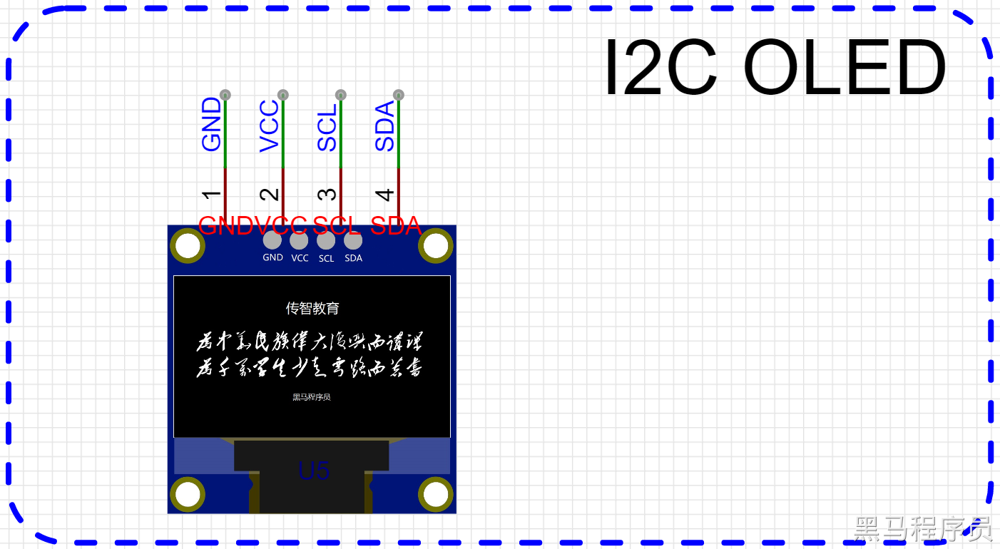</p><p data-lake-id="u148e1d0b" id="u148e1d0b"><a data-lake-id="ub8a75f81" href="https://item.taobao.com/item.htm?spm=a1z10.5-c-s.w4002-24376215607.29.6549544eCgwSoY&amp;id=560526239956&amp;pisk=fmnSQUXNP_f5J4aR7vp4l4cc6xrIFbtap9wKIvIPpuEJJeMzGDkzakJQAYPVYLqy-kGQGXVzzuduAJhZs7yFzYExH82Ne8eRySeYGbIUzDMhAJHKtLVeEEkoEkqp_C-BbYDk-vpsB0_RkxH0BgQ8ZqYIWkqp_B9S-1wuxfWOXHeQkKwULMQK9yBYMS2C28hLwrCYKJqL9UtGOnpNtAOfmi7xpV83fEqzqmw7kEkaMYHeL8UWYvPAvBiuF1VteSsdv7VdxQMjUQsi3u0I1RlyDgGspA0LlD1v1WmjH03Kn_9Yfxgq7zgXwMNq4JaTvr6dvxM8grnLXhCbnqHrJ0c5dMeo4czQsr9dxyrxbP3tN9viHued4yja1UQRRtaGA-NwhK_h-9t-0l54N9ray-27uK9fw248n-NwhK_h-ze0FSJXh_3h.&amp;sku_properties=1627207:28338" id="ub8a75f81" rel="noopener noreferrer" target="_blank"><span data-lake-id="ufc9a542a" id="ufc9a542a">黄保凯中景园0.96寸OLED显示屏12864液晶屏串口屏iic接口ssd1315-淘宝网 (taobao.com)</span></a></p><p data-lake-id="u606d3dd5" id="u606d3dd5">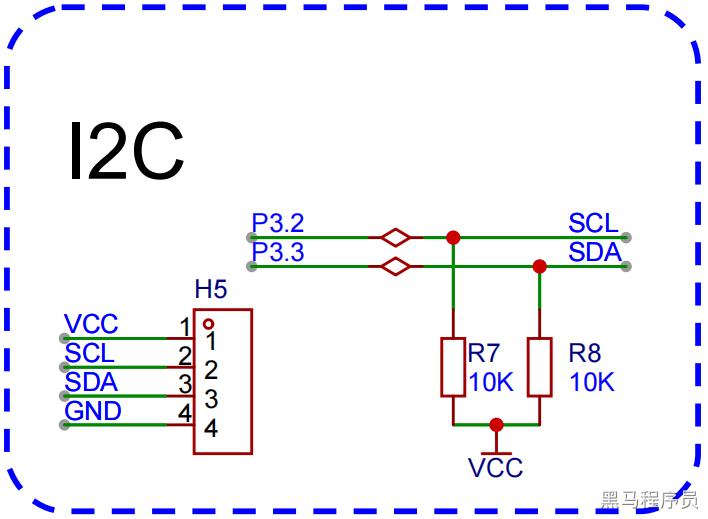</p><p data-lake-id="u265014fe" id="u265014fe"><span data-lake-id="u33597499" id="u33597499">​</span><br/></p><h3 data-lake-id="Mndsr" id="Mndsr"><span data-lake-id="u3be92e3a" id="u3be92e3a">驱动屏幕</span></h3><p data-lake-id="ub9e4c841" id="ub9e4c841">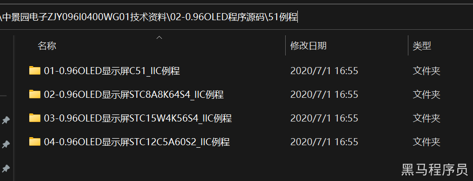</p><p data-lake-id="u594819d1" id="u594819d1"><span data-lake-id="ud0f3f961" id="ud0f3f961">通过官方给定的示例，进行改造，运行.</span></p><ol list="uabb9438d"><li data-lake-id="u6f9f2dcb" fid="u55a09aac" id="u6f9f2dcb"><span data-lake-id="u91ac2dd0" id="u91ac2dd0">通常需要检查官方是否封装了驱动。</span></li><li data-lake-id="u6cdabe99" fid="u55a09aac" id="u6cdabe99"><span data-lake-id="u7fe5c92d" id="u7fe5c92d">如果有封装，如何移植</span></li></ol><p data-lake-id="ub7eecfd3" id="ub7eecfd3"><span data-lake-id="u6641d39d" id="u6641d39d">此处我们只需要进行移植，移植需要看的是头文件。</span></p><p data-lake-id="u5d6d7bee" id="u5d6d7bee"><span data-lake-id="u00a371cb" id="u00a371cb">官方示例头文件:</span></p><p data-lake-id="u25f32909" id="u25f32909">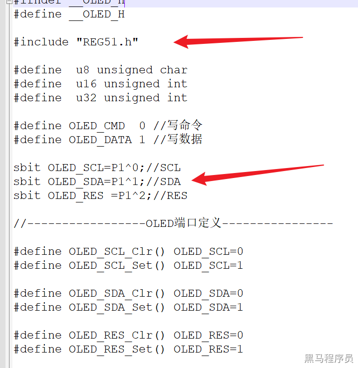</p><ul list="uce101920"><li data-lake-id="uc03a736b" fid="ue210f7bd" id="uc03a736b"><span data-lake-id="u097a2c3e" id="u097a2c3e">引脚不符合需求，需要改成自己对应的</span></li><li data-lake-id="u1062ef73" fid="ue210f7bd" id="u1062ef73"><span data-lake-id="udc977a17" id="udc977a17">引入的头存在差异，修改为自己的</span></li></ul><p data-lake-id="u4def55c1" id="u4def55c1"><span data-lake-id="u4d387104" id="u4d387104">修改后如下：</span></p><p data-lake-id="u5bc4721b" id="u5bc4721b">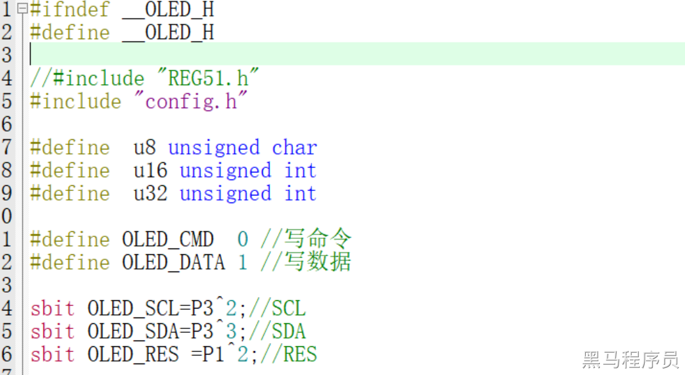</p><p data-lake-id="u66d083c6" id="u66d083c6"><span data-lake-id="u20962a20" id="u20962a20">直接编译，烧录运行，验证是否成功。</span></p><p data-lake-id="u6cab27b9" id="u6cab27b9"><span data-lake-id="u97038f36" id="u97038f36">当前不成功，通常此时是引脚模式问题。</span></p><p data-lake-id="uc6b0f1ef" id="uc6b0f1ef"><span data-lake-id="u9cbed0ed" id="u9cbed0ed">在代码初始化时，初始化所有的引脚即可解决这个问题。</span></p><h3 data-lake-id="I5RRS" id="I5RRS"><span data-lake-id="ud3e2c971" id="ud3e2c971">API的使用</span></h3><span class="yuque-card-unsupported">[codeblock]</span><ul list="u89f864aa"><li data-lake-id="u0558a8b8" fid="u84b93a66" id="u0558a8b8"><span data-lake-id="u306a2314" id="u306a2314">x, y: 为坐标</span></li><li data-lake-id="ua23f6507" fid="u84b93a66" id="ua23f6507"><span data-lake-id="u804052a3" id="u804052a3">sizey为字体高度</span></li><li data-lake-id="u6d050c4f" fid="u84b93a66" id="u6d050c4f"><span data-lake-id="ud9651700" id="ud9651700">其他为显示的具体信息</span></li></ul><h3 data-lake-id="fhslm" id="fhslm"><span data-lake-id="ufaa35143" id="ufaa35143">软驱动与硬驱动</span></h3><ul list="u9eefde5d"><li data-lake-id="uff7e406e" fid="u50bdcd15" id="uff7e406e"><span data-lake-id="u7c3574da" id="u7c3574da">硬驱动：硬件电路实现（I2C外设）I2C数据的发送与读取，执行效率高，节省CPU的运算资源。</span></li><li data-lake-id="u1be0c37f" fid="u50bdcd15" id="u1be0c37f"><span data-lake-id="udae5935b" id="udae5935b">软实现：通过代码直接操作IO，进行拉高拉低，实现I2C数据的发送与读取，CPU较累。软实现优点是适用场景广泛，对硬件电路要求没那么严格。如果硬实现无法正常通信，可以尝试用软实现。</span></li></ul><p data-lake-id="u47b083de" id="u47b083de"><span data-lake-id="u33fc1c4b" id="u33fc1c4b">官方示例的逻辑为I2C的软件驱动方式，意思是自己通过发送高低电平，模拟I2C的协议，进行I2C通讯。</span></p><p data-lake-id="u6e6e0110" id="u6e6e0110"><span data-lake-id="uf7789da9" id="uf7789da9">硬驱动的意思是，我的电路中通过电路设计，可以实现高低电平的变化，这个高低电平的变化遵循了I2C协议，只需要通过寄存器控制就可以打开这个功能。</span></p><p data-lake-id="u3efbf190" id="u3efbf190"><span data-lake-id="u749b5d63" id="u749b5d63">一些冲突问题：</span></p><ul list="u36d870a5"><li data-lake-id="u4061daa8" fid="ufb257fff" id="u4061daa8"><span data-lake-id="u6871f1bc" id="u6871f1bc">I2C是总线，可以有很多从设备，我们扩展板上有时钟设备，也是I2C</span></li><li data-lake-id="u5f647ee6" fid="ufb257fff" id="u5f647ee6"><span data-lake-id="ua79c0af7" id="ua79c0af7">时钟设备和屏幕应该可以采用I2C同时工作</span></li><li data-lake-id="u6b24b475" fid="ufb257fff" id="u6b24b475"><span data-lake-id="u6000137c" id="u6000137c">时钟实现为默认的硬驱动</span></li><li data-lake-id="u145bf925" fid="ufb257fff" id="u145bf925"><span data-lake-id="u872724c9" id="u872724c9">屏幕为软驱动</span></li><li data-lake-id="ua65dec7c" fid="ufb257fff" id="ua65dec7c"><span data-lake-id="u2ec059e5" id="u2ec059e5">他们共用了相同的SCL和SDA引脚</span></li></ul><p data-lake-id="u58f58082" id="u58f58082"><span data-lake-id="u884e468a" id="u884e468a">如果不共用的话，一个软实现一个硬实现，不会有问题。共用，则需要修改一方。目前我们将软实现修改为硬实现。</span></p><p data-lake-id="uc00c1941" id="uc00c1941"><span data-lake-id="u8115ea65" id="u8115ea65">修改 </span><code data-lake-id="u6b685ea9" id="u6b685ea9"><span data-lake-id="u60075772" id="u60075772">OLED_WR_Byte</span></code><span data-lake-id="u96949f89" id="u96949f89">的实现即可</span></p><p data-lake-id="ub0af254e" id="ub0af254e"><span data-lake-id="ud87e9559" id="ud87e9559">改为：</span></p><span class="yuque-card-unsupported">[codeblock]</span><h3 data-lake-id="mHCrI" id="mHCrI"><span data-lake-id="uba1dd534" id="uba1dd534">字体制作</span></h3><ol list="uc4109794"><li data-lake-id="ue83205c4" fid="u540de9df" id="ue83205c4"><span data-lake-id="ub60e02bf" id="ub60e02bf">打开提供的制作软件，确保为字符模式</span></li></ol><p data-lake-id="uaea57bed" id="uaea57bed" style="padding-left: 2em">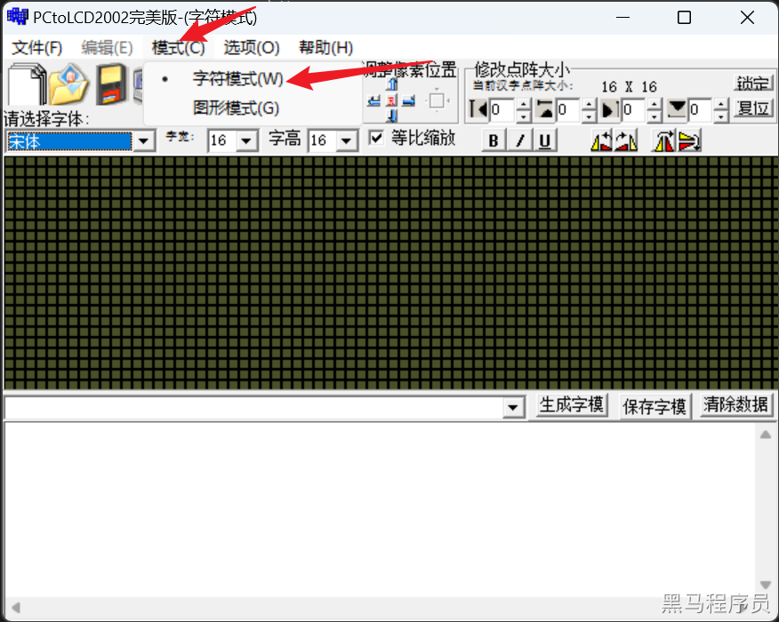</p><ol list="u178bb9fb" start="2"><li data-lake-id="u7eec47ad" fid="u0479117c" id="u7eec47ad"><span data-lake-id="ub992cb37" id="ub992cb37">在输入框输入要生成的文字</span></li></ol><p data-lake-id="u6b73ab05" id="u6b73ab05" style="padding-left: 2em">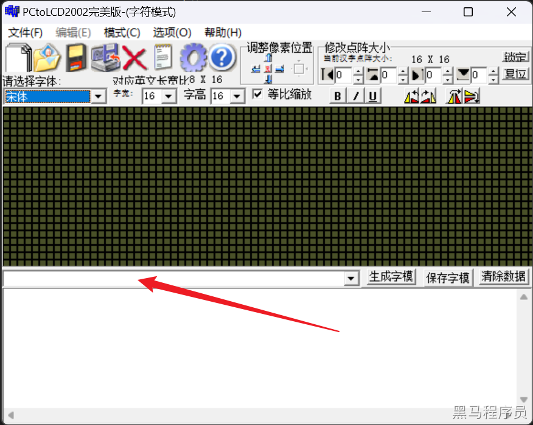</p><ol list="u4d46855f" start="3"><li data-lake-id="u4bb2b150" fid="ua17e2c56" id="u4bb2b150"><span data-lake-id="uc788ddb0" id="uc788ddb0">配置为</span><code data-lake-id="uc2d7ca01" id="uc2d7ca01"><span data-lake-id="u06641ef4" id="u06641ef4">c51</span></code><span data-lake-id="u65561e6b" id="u65561e6b">输出模式</span></li></ol><p data-lake-id="u23801972" id="u23801972" style="padding-left: 2em">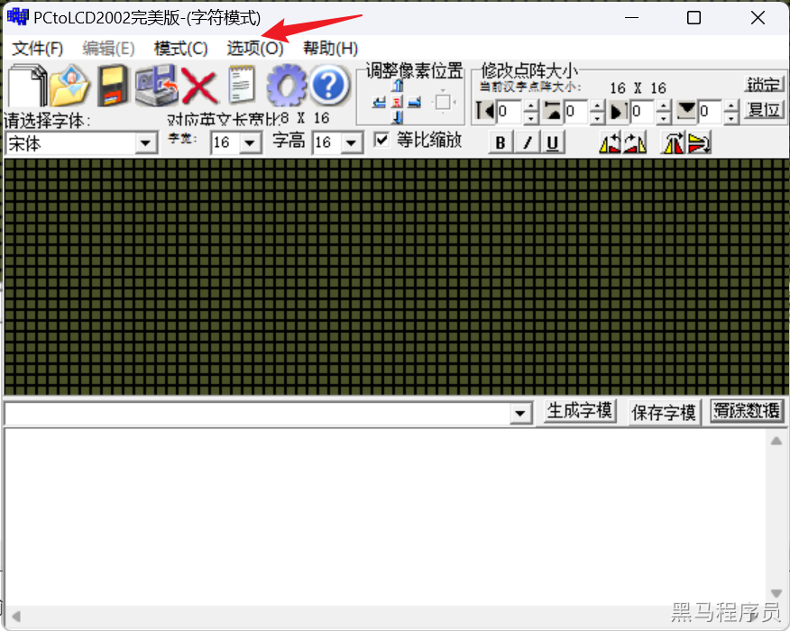</p><p data-lake-id="u9819bd23" id="u9819bd23" style="padding-left: 2em">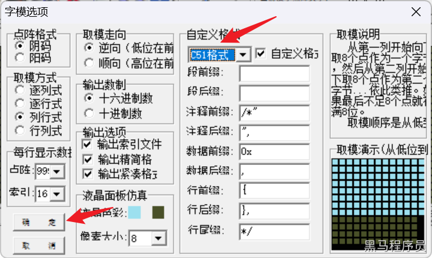</p><ol list="ucfad1d64" start="4"><li data-lake-id="u21480560" fid="uc3ea3d94" id="u21480560"><span data-lake-id="u986e1b33" id="u986e1b33">生成数据</span></li></ol><p data-lake-id="u5205d747" id="u5205d747" style="padding-left: 2em">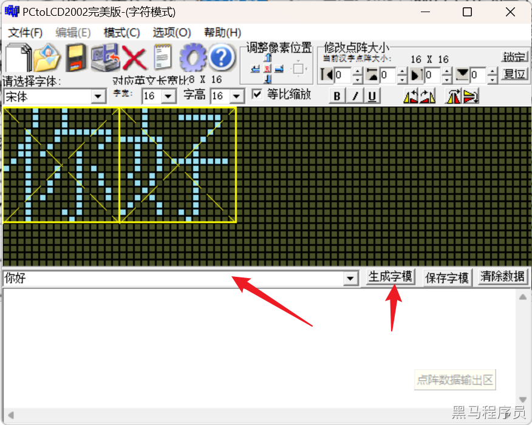</p><ol list="u3271f301" start="5"><li data-lake-id="uf4f4f31b" fid="ud2f8bb05" id="uf4f4f31b"><span data-lake-id="u49844bef" id="u49844bef">将生成的数据放到 </span><code data-lake-id="u84de86c0" id="u84de86c0"><span data-lake-id="ufad592d6" id="ufad592d6">oledfont.h</span></code><span data-lake-id="u93fc6b27" id="u93fc6b27">中</span></li></ol><h3 data-lake-id="W7byO" id="W7byO"><span data-lake-id="ucdf43fa0" id="ucdf43fa0">图形制作</span></h3><ol list="u5c492028"><li data-lake-id="ub5e28a9f" fid="ufef46050" id="ub5e28a9f"><span data-lake-id="u59da317b" id="u59da317b">配置模式</span></li></ol><p data-lake-id="u78be41d2" id="u78be41d2" style="padding-left: 2em">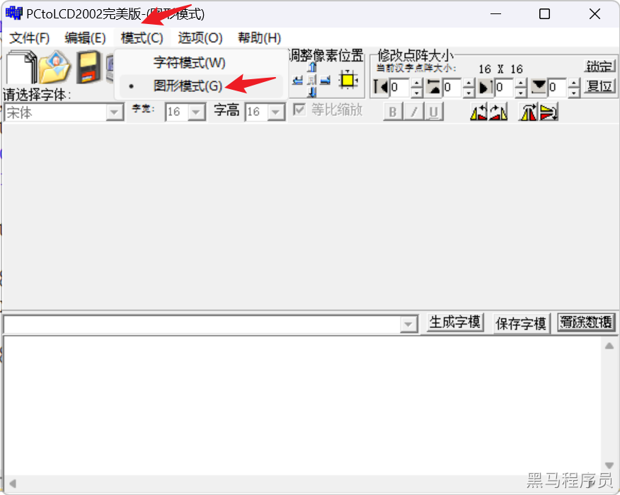</p><ol list="u5c492028" start="2"><li data-lake-id="u79f24db9" fid="ufef46050" id="u79f24db9"><span data-lake-id="uf0bded61" id="uf0bded61">新建图像</span></li></ol><p data-lake-id="ua97dcbf4" id="ua97dcbf4" style="padding-left: 2em">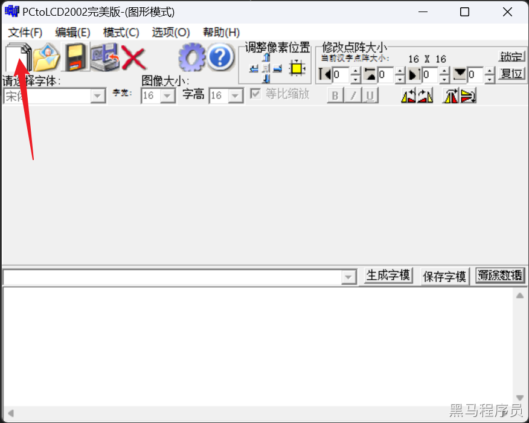</p><p data-lake-id="u1c69d884" id="u1c69d884" style="padding-left: 2em">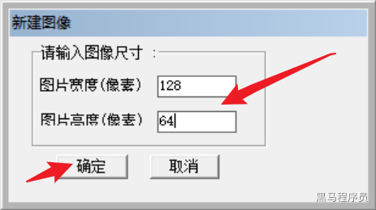</p><ol list="u5c492028" start="3"><li data-lake-id="u5d72f145" fid="ufef46050" id="u5d72f145"><span data-lake-id="u3b83237b" id="u3b83237b">生成数据</span></li></ol><p data-lake-id="u0db99444" id="u0db99444" style="padding-left: 2em">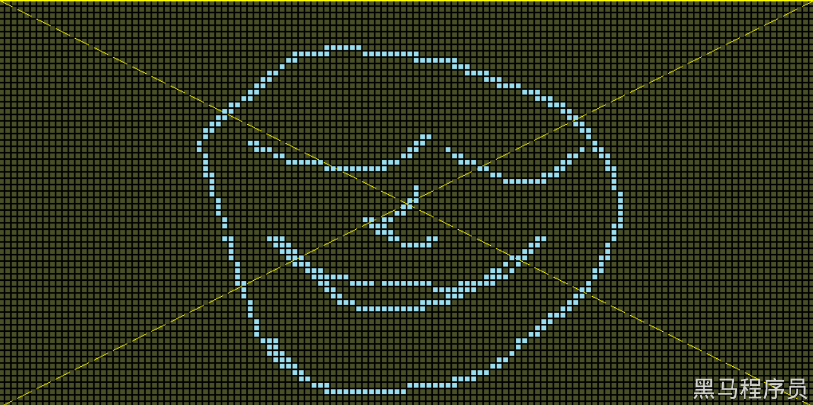</p><p data-lake-id="u16d2a5f5" id="u16d2a5f5" style="padding-left: 2em"><span data-lake-id="uc04745d9" id="uc04745d9">点击生成</span></p><ol list="u6b647e0d" start="5"><li data-lake-id="uc99dbc89" fid="ud2f8bb05" id="uc99dbc89"><span data-lake-id="u81dad751" id="u81dad751">将生成的数据放到 </span><code data-lake-id="ua8e8727a" id="ua8e8727a"><span data-lake-id="u1ea9ef52" id="u1ea9ef52">bmp.h</span></code><span data-lake-id="ubf8bfffb" id="ubf8bfffb">中</span></li></ol><blockquote class="lake-alert lake-alert-color3" data-lake-id="uf16c211b" id="uf16c211b"><p data-lake-id="u86463fc8" id="u86463fc8"><span data-lake-id="u51c37e09" id="u51c37e09">注意调整图片输出参数, 否则图片字节数量不够1024Byte ( 128 x 64 = 8192bit / 8 ), 导致屏幕右下角花屏:</span></p><ol list="ud0b268cd"><li data-lake-id="uc61f397a" fid="uf3ca4e51" id="uc61f397a"><span data-lake-id="u6f64dab1" id="u6f64dab1">点阵数量: 改为99999</span></li><li data-lake-id="ueec0097d" fid="uf3ca4e51" id="ueec0097d"><span data-lake-id="u1c127ebd" id="u1c127ebd">定义格式: C51格式</span></li></ol><p data-lake-id="ud32db423" id="ud32db423">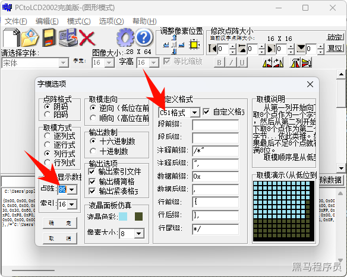</p></blockquote><h2 data-lake-id="ufP2a" id="ufP2a"><span data-lake-id="u380748c0" id="u380748c0">练习题</span></h2><ol list="u047c173d"><li data-lake-id="u97eb5669" fid="u34e5cb5a" id="u97eb5669"><span data-lake-id="u0964508f" id="u0964508f">在屏幕上显示自己的名字</span></li><li data-lake-id="ucd2e501f" fid="u34e5cb5a" id="ucd2e501f"><span data-lake-id="ud69f096e" id="ud69f096e">在屏幕上显示时间</span></li></ol>